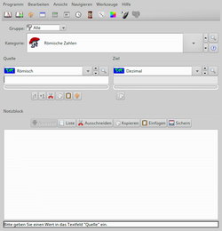
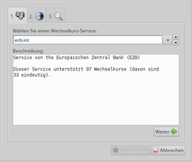
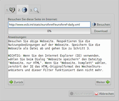
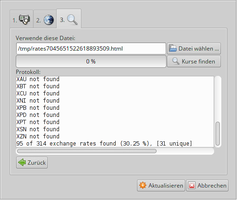

NumericalChameleon
Dieser Artikel wurde für die folgenden Ubuntu-Versionen getestet:
Ubuntu 16.04 Xenial Xerus
Ubuntu 14.04 Trusty Tahr
Zum Verständnis dieses Artikels sind folgende Seiten hilfreich:
Was bedeutet nochmal die Jahres-Angabe MCMLXXIV? Irgendwann hatte man das doch gelernt. Schwieriger ist es schon, zurück zu rechnen, an welchem Wochentag Tina Turner am 26.11.1939 geboren ist. Doch manchen interessiert es ja nur ganz schlicht, wieviel Euro 2300 mexikanische Peso entsprechen, was 12,25 britische Gallonen in Litern sind oder was die Geschwindigkeit 14,7 Knoten in km/h bedeutet.
Sicher gibt es viele Wege, derlei Fragen zu klären, doch kaum einer davon wird wohl einfacher sein als NumericalChameleon  . Diese plattformübergreifend verwendbare Java-Applikation hat eine leicht bedienbare graphische Oberfläche und rechnet im Handumdrehen einfach alles um, was man sich so vorstellen kann. Und damit man nicht gleich wieder vergisst, was man errechnet hat, bietet das Programm noch eine Notizblock-Funktion mit Export-Möglichkeit.
. Diese plattformübergreifend verwendbare Java-Applikation hat eine leicht bedienbare graphische Oberfläche und rechnet im Handumdrehen einfach alles um, was man sich so vorstellen kann. Und damit man nicht gleich wieder vergisst, was man errechnet hat, bietet das Programm noch eine Notizblock-Funktion mit Export-Möglichkeit.
NumericalChameleon ist OSI Certified Open Source Software. Es ist ohne Registrierungszwang und ohne Einschränkungen kostenlos erhältlich und nutzbar. Ausführliche Erläuterungen findet man auf der Homepage des Projekts.
Voraussetzungen¶
Das Programm erfordert eine Java-Laufzeitumgebung (JRE) ab Version 6. NumericalChameleon funktioniert gleichermaßen mit OpenJDK und Oracle Java.
Installation¶
 Die Anwendung ist nicht in den offiziellen Paketquellen enthalten.
Die Anwendung ist nicht in den offiziellen Paketquellen enthalten.
Fremdpaket¶
Man lädt ein Fremdpaket im DEB-Format aus einer zuverlässigen Quelle, z.B. direkt von der Homepage  oder über Sourceforge.net
oder über Sourceforge.net  , herunter und installiert es manuell [1].
, herunter und installiert es manuell [1].
Hinweis!
Fremdpakete können das System gefährden.
Erweiterung¶
Möchte man außerdem von der Möglichkeit Gebrauch machen, sich Zahlenwerte ansagen zu lassen, muss man zusätzlich das gewünschte Spracharchiv:
syllables-computer_generated-nc2.x.x-1.zip (männlich, neben deutsch ca. 20 andere Sprachen)
syllables-human_recoreded-nc2.x.x-1.zip (weiblich, nur deutsch)
herunterladen, entpacken [2] und mit Root-Rechten [3] in das Verzeichnis /usr/share/numericalchameleon/lib/ kopieren.
Verwendung¶

Der Programmstart [4] erfolgt bei Ubuntu-Varianten mit einem Anwendungsmenü über den Eintrag "Bildung -> NumericalChameleon". Alternativ kann der Befehl /usr/share/numericalchameleon/bin/unix-like/nc verwendet werden.
Nach dem Programmstart erscheint zuerst das Hauptfenster mit dem Hauptmenü. Dieses ist weitgehend selbsterklärend. Außerdem bietet NumericalChameleon eine sehr ausführliche deutschsprachige Hilfe über den Menüpunkt "Hilfe -> Handbuch" an, sodass es sich erübrigt, hier auf alle Einzelheiten einzugehen. Die Beschreibung beschränkt sich deshalb auf Grundsätzliches und einige Besonderheiten, die man so nicht unbedingt erwartet.
Kategorien, Quelle und Ziel¶
Das wichtigste Anwendungsgebiet von NumericalChameleon ist das Umrechnen von Einheiten. Die über 5200 verwalteten Einheiten sind in derzeit 93 Kategorien gegliedert. Diese reichen von Zahlsystemen, Längen- und Raummaßen bis hin zu den ausgefallensten physikalischen Einheiten. Doch auch Zeitzonen, Währungskurse, internationale Telefon-Vorwahlnummern und Unicode sind darunter zu finden. Mit einem Mausklick lassen sich Quelle und Ziel vertauschen und Rückrechnungen vereinfachen.
Notizen¶
Mit einem Mausklick lässt sich die letzte durchgeführte Umrechnung auf einem Notizblatt protokollieren. Durch Angabe von Anfangs- und Endwert sowie Schrittweite lassen sich auch automatisch ganze Umrechnungs-Listen anfertigen. Von Hand kann man dann noch Überschriften und Anmerkungen in die Protokolle eintragen, die dann als HTML- oder Textdateien mit wählbarer Zeichen-Kodierung gespeichert bzw. exportiert werden können.
Navigation¶
Eine vom Anwender zu erstellende Favoriten-Liste, verschiedene vorgegebene Filter und eine Suchfunktion dienen dazu, sich leichter in der Vielzahl von Kategorien und Einheiten zurechtzufinden.
Konfiguration¶
Über "Bearbeiten -> Einstellungen -> Benutzeroberfläche" kann u.a. die Programmsprache festgelegt werden. Unter "Optik und Haptik" findet man eine große Anzahl verschiedener Themen, mit denen sich das Aussehen der Fenster nach eigenem Geschmack verändern oder an die jeweilige grafische Benutzeroberfläche optimal anpassen lässt. Möchte man das Erscheinungsbild von NumericalChameleon so verändern, dass es einer Standard-GNOME-Anwendung entspricht, so wählt man als Stil "GTK+ 2.0" aus.
Aktualisierung von Wechselkursen¶
Hinweis:
Damit aktualisierte Wechselkurse auch gespeichert werden können, sind folgende Rechte-Anpassungen unabdingbar [5]:
sudo chmod 666 /usr/share/numericalchameleon/data/.nc.properties sudo chmod 666 /usr/share/numericalchameleon/data/.nc.update.properties sudo chmod 666 /usr/share/numericalchameleon/data/units/exchange_rates.list
Viele Wechselkurse ändern sich täglich. Es gibt aber einige Anbieter, die im Internet täglich Listen von Wechselkursen veröffentlichen.
Unter "Werkzeuge -> Wechselkurse aktualisieren" ruft man einen Assistenten auf, mit dem man in drei Schritten die aktuellen Wechselkurse einlesen kann:
Aus den angebotenen Wechselkurs-Anbietern wählt man einen aus. Sehr umfangreich ist beispielsweise "fx.sauder.ubc.ca.filter" der "Sauder School of Business". Die Auswahl bestätigt man mit "Weiter".
Nun erscheint im Auswahlfeld die Adresse des Wechselkurs-Filters dieses Services. Mit der Schaltfläche "Download" werden die aktuellen Daten heruntergeladen. Über "Besuchen" kann man diese Seite mit dem Standard-Browser anzeigen (falls dies nicht funktioniert, muss man die Adresse von Hand übertragen). Mit "Weiter" akzeptiert man diesen Filter.
Nun wählt man die vorgegebene Datei mit den Wechselkursen aus. Über "Kurse finden" werden die Wechselkurse übernommen. Mit "Aktualisieren" wird der Vorgang dann abgeschlossen.
|  |
| 1. Anbieter auswählen (hier EZB) |
|  |
| 2. Kurse herunterladen (Download) |
|  |
| 3. Kurse finden und Aktualisieren |
Tabellen¶
Unter "Navigieren -> Datentabellen" bietet NumericalChameleon noch einige ergänzende Informationen zu Tabellen aus unterschiedlichsten Bereichen an. Diese reichen von Konfektionsgrößen über Papierformate, Stärkeskalen in der Natur bis zur Informatik und zur Finanzwelt. Ab der Version 2.0 sind diese Tabellen kein Programmbestandteil mehr, sondern verweisen größtenteils auf die entsprechenden Artikel in der deutschen Wikipedia.
- Erstellt mit Inyoka
-
 2004 – 2017 ubuntuusers.de • Einige Rechte vorbehalten
2004 – 2017 ubuntuusers.de • Einige Rechte vorbehalten
Lizenz • Kontakt • Datenschutz • Impressum • Serverstatus -
Serverhousing gespendet von